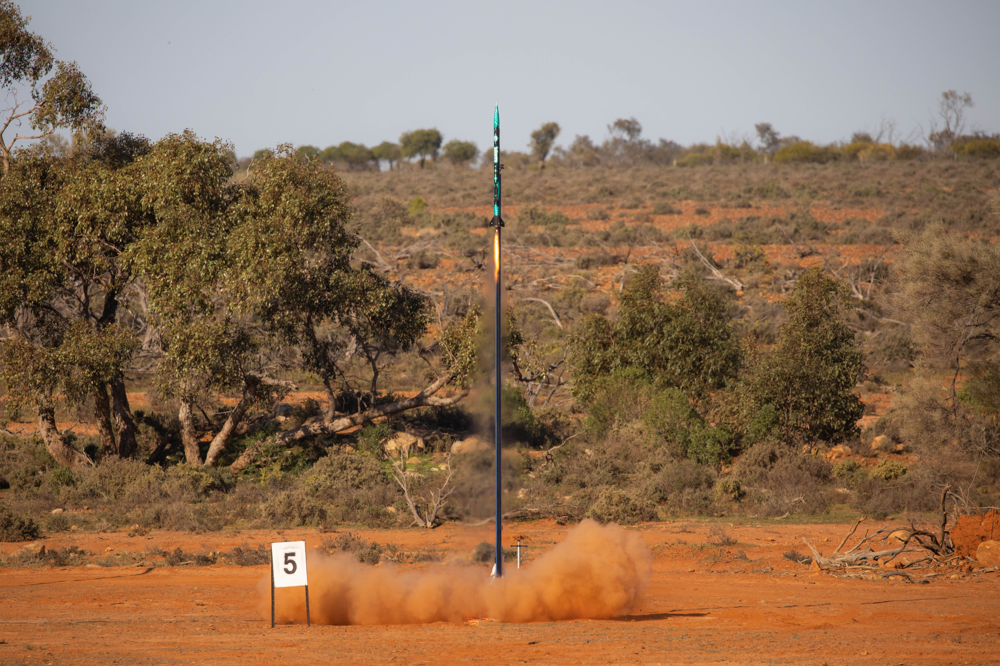
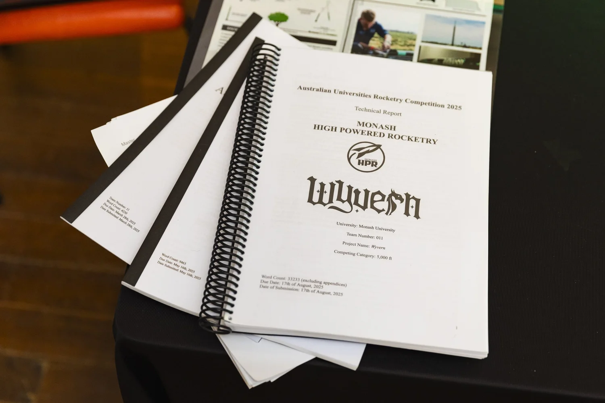
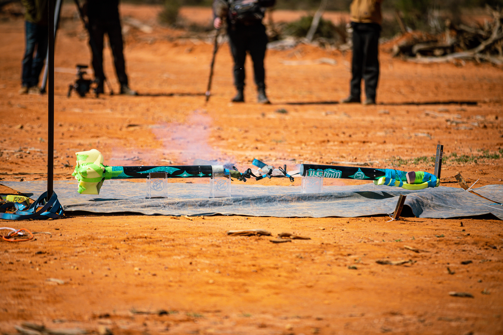
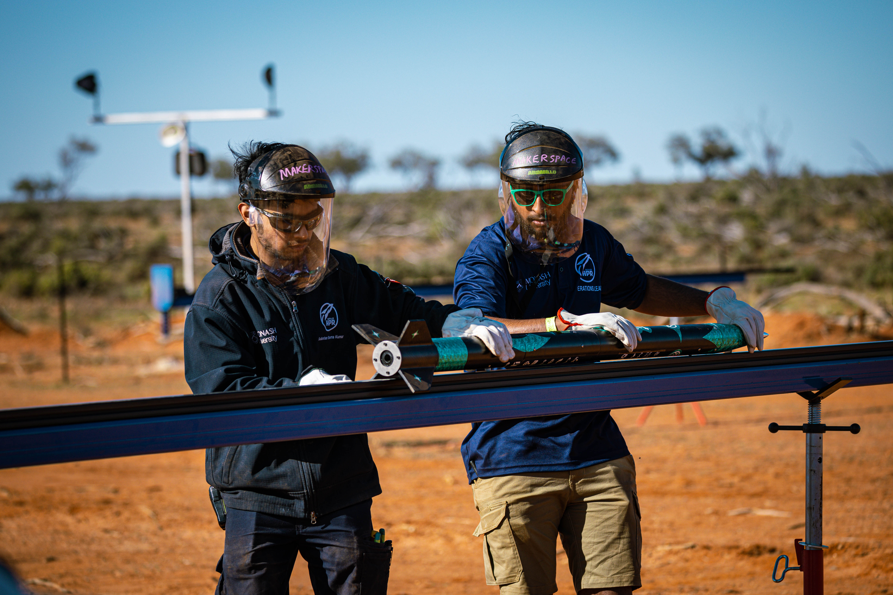
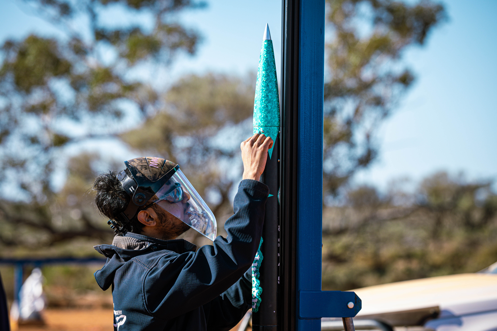
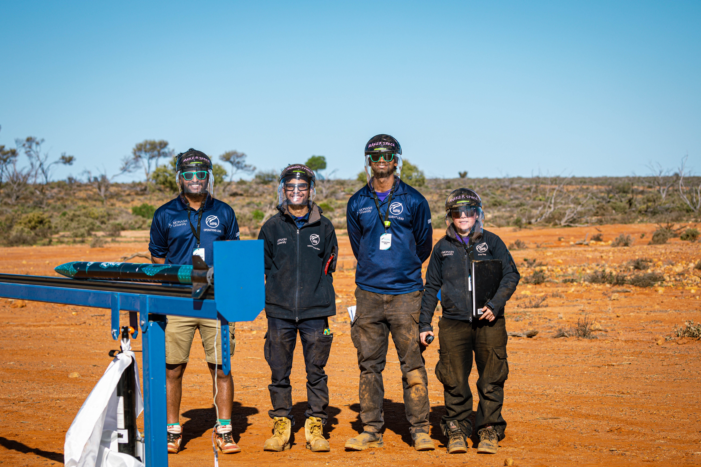
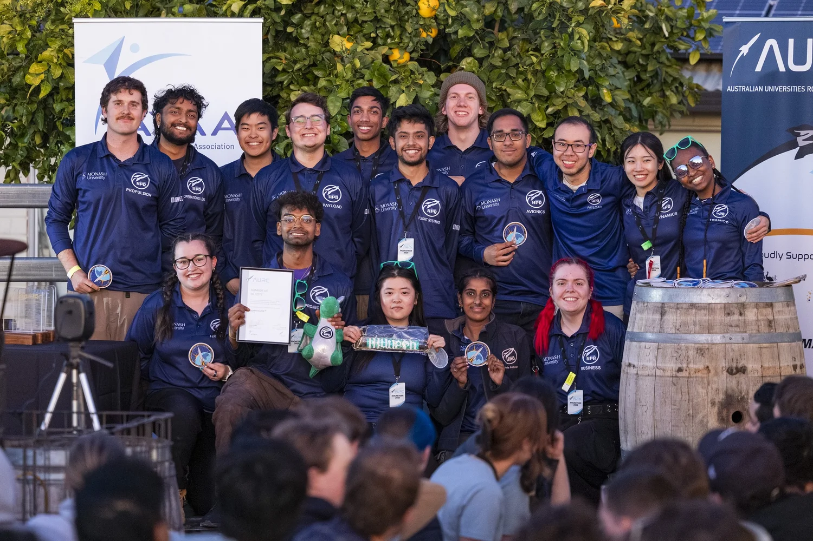

Project Wyvern
Flightline member for all Flight Systems operations on Project Wyvern at the Australian Universities Rocket Competition (AURC) held at White Cliffs, NSW in 2025.

Competition Context
Monash HPR had made the decision to enter into the 2025 Australian Universities Rocket Competition with Project Wyvern competing in the 5,000 ft COTS category. Wyvern was the designated rocket that competed in the 2024 AURC which was held at an online level. This competition served as a test for the team's ability to return to competing domestically, and managing multiple large projects simultaneously. Timelining and people-power issues arose, and the team persevered. I was selected as the Flight Systems Engineer for Wyvern's competition launch. This involved managing the mechanical aspects of the avionics bay and ensuring the deployment of parachutes in flight such that the rocket lands with a slow velocity. This role marked my first time being on a deployment flightline, having rewritten checklists for clarity, practiced assembly and building confidence in the months leading up to the competition.

Board design & bring-up
I designed the PCB in Altium - a custom HAT carrying a GPS module and IMU, communicating with the Pi over SPI and I2C - then manufactured and am currently bringing up the board: verifying sensor communication, debugging signal integrity, and writing the Python and C/C++ needed for high-velocity object triangulation.


[Placeholder - add specifics: which GPS module and IMU, why SPI vs I2C for each, and any signal integrity or power issue you had to debug during bring-up.]
Triangulation algorithm
[Placeholder - describe the triangulation approach at a level a non-specialist reviewer can follow: what inputs it fuses, what output it produces, and how you're validating it against a known position.]

Launch Outcome
Due to unforeseen circumstances, Project Wyvern did not successfully achieve airframe separation in flight, resulting in no recovery deployment and the rocket hitting the ground at incredible speed. I was part of the recovery team which involved picking up the remains such that a thorough analysis of the flight can be conducted. Currently the rocket is in the team's workshop, having had the damaged parts put together to tell a story and serve as a reminder that rocketry can be challenging.

Reflecting on the Project
Project Wyvern achieved its goal of ironing out a method that allows for the team to manage multiple large-scale projects successfully. Despite the unsuccessful flight at competition, the team still achieved 2nd place within the category.
It also aided in forming more stringent documentation practices and knowledge transfers across team members. Alas, this is rocketry, and we are students figuring it out. The best course of action from here is to learn what we can, and make adjustments to avoid it again in the future - something that is actively achieved by the team.
And to my fellow team members who were part of the Away Team, thank you for the lifelong memories and for making this competition experience a fun one.
